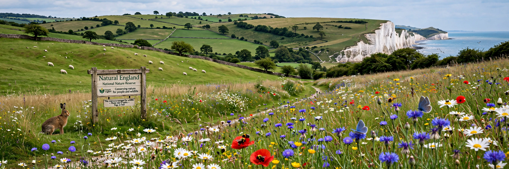

Formed: 1 October 2006
Predecessors: English Nature, Countryside Agency, Rural Development Service
Sponsor: Department for Environment, Food and Rural Affairs (Defra)
Type: Non-departmental public body
Natural England is a non-departmental public body in the United Kingdom sponsored by the Department for Environment, Food and Rural Affairs (Defra). It is the government's adviser for the natural environment in England, responsible for helping to protect England's nature and landscapes for people to enjoy.
Natural England designates and manages National Nature Reserves and Sites of Special Scientific Interest (SSSIs), administers agri-environment schemes such as Environmental Stewardship, advises on planning and marine protection, licenses activities affecting protected species, and maintains open access land under the Countryside and Rights of Way Act 2000. It played a leading role in creating the England Coast Path.
It was formed in 2006 by merging English Nature, parts of the Countryside Agency, and the Rural Development Service under the Natural Environment and Rural Communities Act 2006.